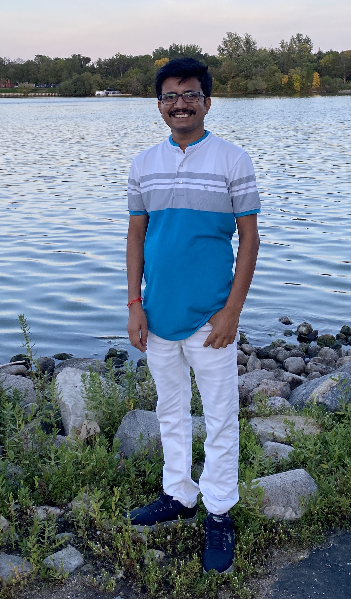

About us
We are the discrete math research group in the
Department of Mathematics and
Statistics at the University of Regina. Our group meets weekly throughout the year to work on
open problems in discrete mathematics. This is not a seminar series but
rather a working group. We are always looking for new and interesting
problems. Post-doctoral fellows and graduate students are welcomed and encouraged to participate. Please contact one of Shaun Fallat, Allen Herman , or Karen Meagher
if you are interested in joinning our group.
Current Members
Faculty
| |
|
|

Post-doctoral Fellows
| |
|
|
 |
|
|
Students
|
Past Members
Mohammad Adm, DADD Post-Doctoral Fellow
Bahman Ahmadi, PhD Student
Fatemeh Alinaghipour, PhD Student
Robert Bailey, PIMS Post-Doctoral Fellow
Andrea Burgess, Post-Doctoral Fellow
Ryan Bergen, Masters Student
Michael Cavers, PhD Student
Yi-Zheng Fan, Post-Doctoral Fellow
Chris Fisher, Professor
Adam Gore, Masters Student
Ferdinand Ihringer, PIMS Post-Doctoral Fellow
Bahman Ahmadi, PhD Student
Fatemeh Alinaghipour, PhD Student
Robert Bailey, PIMS Post-Doctoral Fellow
Andrea Burgess, Post-Doctoral Fellow
Ryan Bergen, Masters Student
Michael Cavers, PhD Student
Yi-Zheng Fan, Post-Doctoral Fellow
Chris Fisher, Professor
Adam Gore, Masters Student
Ferdinand Ihringer, PIMS Post-Doctoral Fellow
Sam Jaques, Undergraduate Student
Neha Joshi, PhD Student
Shahla Nasserasr, Post-Doctoral Fellow
Mahsa Shirazi, PhD Student
Venkata Raghu Tej Pantangi, PIMS Post-Doctoral Fellow
Pavel Semukhin, Visiting Researcher
Ryan Tifenbach, Post-Doctoral Fellow
Guanglong Yu, Visiting Researcher
Boting Yang, Professor
Neha Joshi, PhD Student
Shahla Nasserasr, Post-Doctoral Fellow
Mahsa Shirazi, PhD Student
Venkata Raghu Tej Pantangi, PIMS Post-Doctoral Fellow
Pavel Semukhin, Visiting Researcher
Ryan Tifenbach, Post-Doctoral Fellow
Guanglong Yu, Visiting Researcher
Boting Yang, Professor
Publications
Underlined authors are post-doctoral fellows or graduate students.
Published
- The q-analogue of zero forcing for certain families of graphs, S. Fallat; N. Joshi; R. Maleki; K. Meagher; A. S. Mojallal; S. S. Nasserasr, N. Mahsa ; A. S. Razafimahatratra; B. Stevens, Discrete Applied Mathematics 348 (2024), 91-104.
- Weakly Hadamard diagonalizable graphs, M. Adm; S. Fallat; K. Meagher; S. Nasserasr; M. N. Shirazi; A. S.Razafimahatratra, Linear Algebra Applied 610 (2021), 86-119.
- Achievable multiplicity partitions in the inverse eigenvalue problem of a graph, M. Adm; S. Fallat; K. Meagher; S. Nasserasr; S. Plosker; B. Yang, Special Matrices, 7 (2019), 276-290.
- Ovoids of generalized quadrangles of order (q,q2-q) and Delsarte cocliques in related strongly regular graphs, M. Adm; R. Bergen; F. Ihringer; S. Jaques; K. Meagher; A. Purdy; B. Yang, Journal of Combinatorial Designs, 26 (5) (2018), 249-263.
- Infection in hypergraphs, R. Bergen; S. Fallat; A. Gorr; F. Ihringer; K. Meagher; A. Purdy; B. Yang; G. Yu, Discrete Applied Mathematics, 237 (2018), 43-56.
- Minimum number of distinct eigenvalues of graphs, B. Ahmadi; F. Alinaghipour; M, S.Cavers ; S. Fallat; K. Meagher; S. Nasserasr, Electronic Journal of Linear Algebra, 26 (2013), 673-691.
- The minimum rank of universal adjacency matrices, B. Ahmadi; F. Alinaghipour; S. Fallat; Y.-Z.Fan; K. Meagher; S. Nasserasr, Linear Algebra and its Applications, 437 (8) (2012), 2064-2076.
- Generalized covering designs and clique coverings, R. Bailey; A. Burgess; M. S. Caver; K. Meagher, Journal of Combinatorial Designs, 19(5) (2011), 378-406.
Preprints
- On the Minimum number of distinct Eigenvalues of Distance Regular Graphs, S. Fallat, H. Gupta , A. Herman, J. Parenteau.